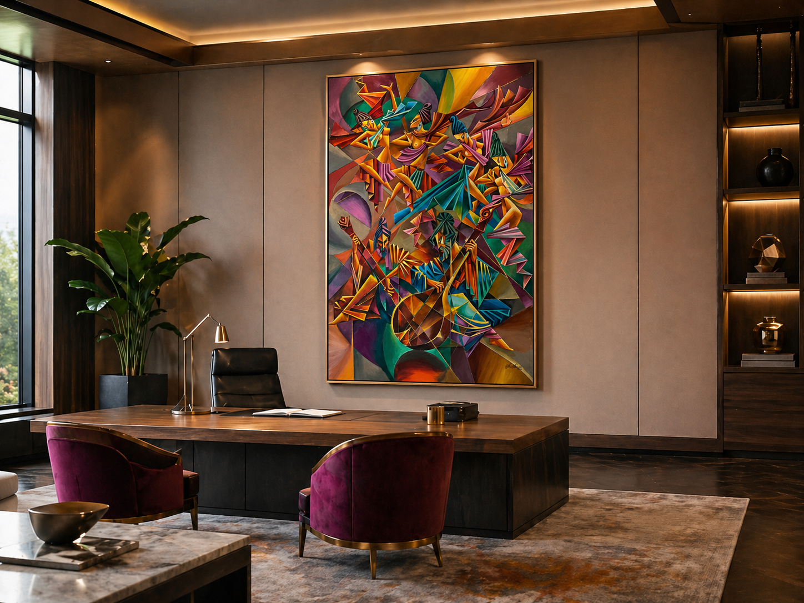

Corporate Spaces
Introduce original Sri Lankan art into offices and renew the energy of rooms on a monthly basis through artwork rotation.
Explore this pageBringing Sri Lankan art into the spaces where life and work unfold while creating greater visibility for artists and a stronger culture of art appreciation in Sri Lanka.
Cithambara Diya was created to bring original Sri Lankan art into the spaces where people work, meet and live, while strengthening a wider culture of artistic appreciation in Sri Lanka. We believe culture is shaped both from the top down and from the ground up: when companies, institutions and individuals engage seriously with art, they help create an environment where better taste, deeper thought and stronger creative confidence can grow. Through curated artwork placement and monthly rotation, Cithambara Diya connects meaningful interiors with original works by local artists, creating spaces that feel more refined, more alive and more culturally grounded. Beginning in Colombo, the platform is designed to grow regionally, supporting artists and clients within each area while contributing to a broader cultural mission across Sri Lanka.
Introduce original Sri Lankan art into offices and renew the energy of rooms on a monthly basis through artwork rotation.
Explore this pagePresent Sri Lankan artists with short biographies, artistic styles and selected works already shared through Cithambara Diya.
View artistsBrowse available works by atmosphere, visual character and genre, from serene and reflective to bold and adventurous.
Browse artworks
Guttila was a master musician serving the king of Benares, while Musila was a young and ambitious student eager to learn the art of playing the Veena. Initially, Guttila refused to teach Musila, but after Musila cared for Guttila’s blind parents, he agreed to train him. Musila became highly skilled and eventually challenged Guttila, claiming he was equal to his teacher. The king arranged a musical contest between them. With divine intervention, Guttila emerged victorious, proving that a student should always respect and honor their teacher. Musila, exposed for his arrogance and ingratitude, was rejected by the people. This tale serves as a timeless lesson on humility, respect, and the importance of acknowledging one's mentors
Alexie Kenneth Adams is a fine artist with over 40 years of painting experience, whose work is rooted in classical traditions while also pushing their boundaries through original pieces and thoughtful reworkings of classical fine art. Over the years, he has developed a distinctive style shaped by technical exploration, cultural resonance and sustained artistic commitment. His works often draw on cultural themes and are created to evoke reflection, emotion and a renewed way of seeing. Through this practice, he continues to build a body of work that is both grounded in tradition and open to new expression.

An example of how Guttila & Musila by Kenneth Adams could bring life to your professional interior.